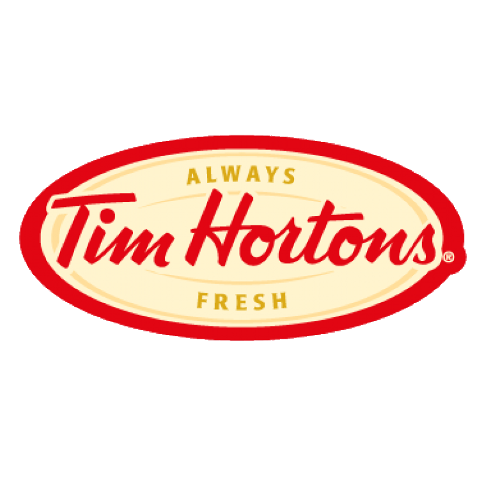
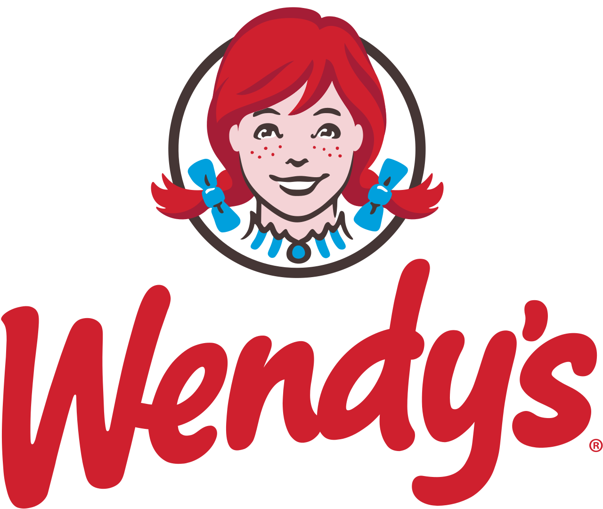

London, ON 2014 - Present
• Received incoming orders, assured quality and stocked them accordingly
Woodstock, ON 2011 – 2014
• Positioned in Woodstock General HospitalWoodstock, ON 2007 – 2011
• Organized and rotated stock to guarantee freshness and visual appeal of product
Woodstock, ON 2006 – 2007
• Took customer orders and provided cash, debit and credit card services